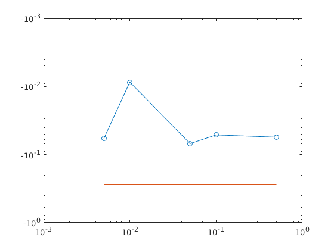

6 Laboratorijas darbs
Raimonds Neimanis 171REB112 - REBCO4, 1.kurss
Contents
Vidējas vertības aprēķins
t = 0:0.01:5.5; N = length(t); xvid3a = 1/(N-1)*sum(lab3_fun(t(1:end-1))) xvid3b = 1/(N-1)*sum(lab3_fun(t(2:end))) h = 0.01 xvid3c = 1/(N-1) * sum(lab3_fun(t(1:end-1)+h/2)) xvid4 = 1/(N-1)* ((lab3_fun(t(1)) + lab3_fun(t(end)))/2 + sum(lab3_fun(t(2:end-1))))
xvid3a =
-0.0422
xvid3b =
-0.0472
h =
0.0100
xvid3c =
-0.0537
xvid4 =
-0.0430
istas videjas veribas atrašana
- sinusoīda
syms t_sin%% Vidējas vertības aprēķins t = 0:0.01:5.5; N = length(t); xvid3a = 1/(N-1)*sum(lab3_fun(t(1:end-1))) xvid3b = 1/(N-1)*sum(lab3_fun(t(2:end))) h = 0.01 xvid3c = 1/(N-1) * sum(lab3_fun(t(1:end-1)+h/2)) xvid4 = 1/(N-1)* ((lab3_fun(t(1)) + lab3_fun(t(end)))/2 + sum(lab3_fun(t(2:end-1))))
xvid3a =
-0.0523
xvid3b =
-0.0808
h =
0.0100
xvid3c =
-0.0404
xvid4 =
-0.0241
istas videjas veribas atrašana
- sinusoīda
syms t_sin A0=0; A=-2.5; T = (2.5-1)/6; f = 1/T; delay = 1; y_sin=A0+A*sin(2*pi*f*(t_sin-delay)); int_sin=int(y_sin,t_sin,1,2.5) % * saw syms t_saw k = (0-2)/(0-1); delay = 0; y_saw = k*(t_saw-delay); int_saw = int(y_saw,t_saw,0,1) % * const syms t_const y_const = -2.5; int_const = int(y_const,t_const,2.5,3.5) ista_vv =double(1/(t(end))*(int_const+int_saw+int_sin)) A0=0; A=-2.5; T = (2.5-1)/6; f = 1/T; delay = 1; y_sin=A0+A*sin(2*pi*f*(t_sin-delay)); int_sin=int(y_sin,t_sin,1,2.5) % * saw syms t_saw k = (0-2)/(0-1); delay = 0; y_saw = k*(t_saw-delay); int_saw = int(y_saw,t_saw,0,1) % * const syms t_const y_const = -2.5; int_const = int(y_const,t_const,2.5,3.5) ista_vv =double(1/(t(end))*(int_const+int_saw+int_sin)) % Rezultātu noformēšana tabulas vai grafika veidā dt = [0.5 0.1 0.05 0.01 0.005]; xvid3cm =[]; for dtc = dt t = 0:dtc:5.5; N = length(t); h = dtc; xvid3c = 1/(N-1) * sum(lab3_fun(t(1:end-1)+h/2)); fprintf('|platums=%d\t|vv3c=%d\n',h,xvid3c); xvid3cm = [xvid3cm,xvid3c]; end loglog(dt,xvid3cm,'o-',dt,ista_vv+0*dt) % semilogyista_vv % loglog
int_sin = 0 int_saw = 1 int_const = -5/2 ista_vv = -0.2727 int_sin = 0 int_saw = 1 int_const = -5/2 ista_vv = -0.2727 |platums=5.000000e-01 |vv3c=-5.562008e-02 |platums=1.000000e-01 |vv3c=-5.139452e-02 |platums=5.000000e-02 |vv3c=-6.913156e-02 |platums=1.000000e-02 |vv3c=-8.629265e-03 |platums=5.000000e-03 |vv3c=-5.808270e-02
Simulink aprēķini
Secinājumi
Simulinkam lai tas straadatu vajadzetu komandlogaa nodefinēt dtc = 0.01 Ar matlab programaturu mes iemacijamies apreikinat videju vertibu un efiktivu vertibu ar dazadiem formulam(metodiem),ka ari iemacijamies ar Simulinku modelet funkcijas videju vertibu apreikinasanu.